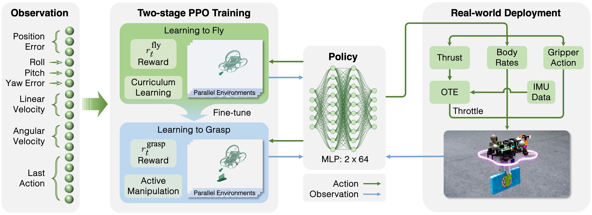

(a) Our deep reinforcement learning policy exhibits active manipulation behavior: the agent actively opens the gripper in preparation for grasping and then determines the appropriate timing to close it swiftly (within 0.1s) to enable a smooth and rapid swooping motion for high-speed aerial grasping. (b) Our policy can robustly grasp objects placed at different positions and yaw orientations with grasping speeds of up to 1.5 m/s.
Abstract
High-speed aerial grasping presents significant challenges due to the high demands on precise, responsive flight control and coordinated gripper manipulation. In this work, we propose Swooper, a deep reinforcement learning (DRL) based approach that achieves both precise flight control and active gripper control using a single lightweight neural network policy. Training such a policy directly via DRL is nontrivial due to the complexity of coordinating flight and grasping. To address this, we adopt a two-stage learning strategy: we first pre-train a flight control policy, and then fine-tune it to acquire grasping skills. With the carefully designed reward functions and training framework, the entire training process completes in under 60 minutes on a standard desktop with an Nvidia RTX 3060 GPU. To validate the trained policy in the real world, we develop a lightweight quadrotor grasping platform equipped with a simple off-the-shelf gripper, and deploy the policy in a zero-shot manner on the onboard Raspberry Pi 4B computer, where each inference takes only about 1.0 ms. In 25 real-world trials, our policy achieves an 84% grasp success rate and grasping speeds of up to 1.5 m/s without any fine-tuning. This matches the robustness and agility of state-of-the-art classical systems with sophisticated grippers, highlighting the capability of DRL for learning a robust control policy that seamlessly integrates high-speed flight and grasping.
System Overview
Our two-stage DRL-based approach first trains a flight control policy and then fine-tunes it to acquire gripper control, finally yielding a unified and lightweight aerial grasping policy. Each stage is guided by a tailored reward function. The policy network takes the current and desired states of the quadrotor as input, and outputs a CTBR command for flight control and a gripper control command. OTE refers to the Online Throttle Estimation module in Section V-E.
BibTeX
@article{swooper_2025,
title={Swooper: Learning High-Speed Aerial Grasping with a Simple Gripper},
author={Ziken, Huang and Xinze, Niu and Bowen, Chai and Renbiao, Jin and Danping, Zou},
journal={IEEE Robotics and Automation Letters},
year={2025},
}